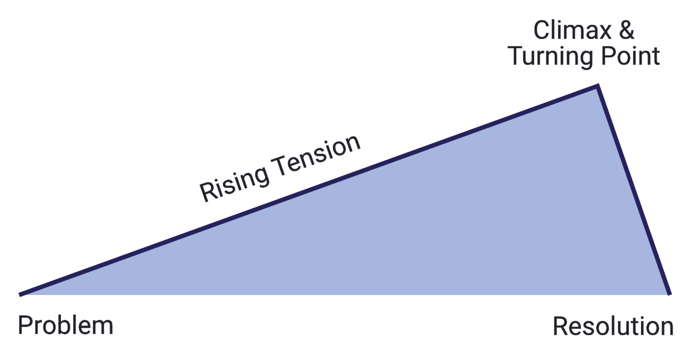

Storytelling is the art of the media, where instead of aiming to display a beautiful piece, or a elusive melody, it aims to appease the masses by telling a story. Telling a story has always been part of human nature, as we developed languages. The things we see, hear or think are all in part of the story in some sense. A story is not a tale where it always tends to tell a moral, nor is it always bombastic, separated into genres of their kind. Stories are bottled experiences, whether they're fictional - made up - or very real, like today's issues.
All of Storytelling can be split up into multiple types, where its is not always pen, nor paper, that uses story telling. Storytelling is diverse, able to blend in with other medias, such as visual storytelling, auditorial storytelling, or implicit storytelling. One technique that works for others, might not work for all medias. But what we can do is establish common tropes and reoccuring things that you may use as you perform storytelling.
Let's take down a walk through how this artform is formed.
Whilst you can take oddball routes where custom routes are moved, or subverted to form non-standard crafts, there is a standard that most follow. If fact, we have probably already used this method in our lives, that is the simple: Freytag's Pyramid.

Freytag's Pyramid is an age-old paradigm, detailing the general structure of a story. In it, it breaks down the story into segments, naming it specifically after each part. Let us go through a bit of it. With a little help from this video.